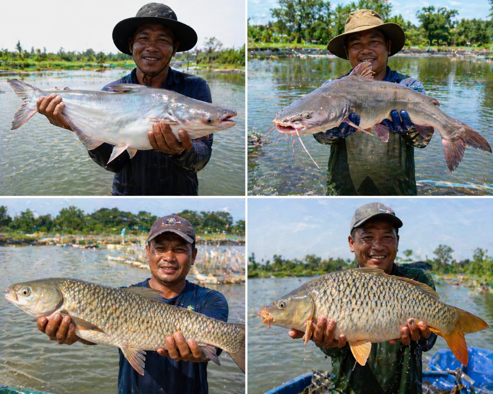
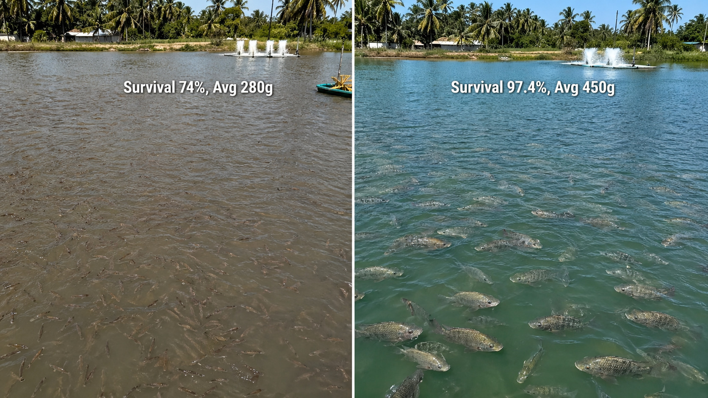

活力旺® 养殖鱼类方案
养殖鱼类方案
FCR↓·存活率↑·链球菌防控·均重提升
您的鱼场是否也面临这些挑战？
链球菌+高温病害
每到高温夏季，罗非鱼、草鱼养殖户最怕的不是台风，而是“转眼全军覆没”的链球菌。水温超过28°C，链球菌大规模爆发，感染鱼只在72小时内死亡率飙升至50-80%。广东、海南、越南、泰国的鱼塘，夏天几乎无一幸免。
FCR偏高+巴沙鱼高死亡率
越南巴沙鱼场场长坦言：FCR平均1.6，鱼只死亡率高达60%，即使市场行情好，利润也被饲料成本和药费吃光。中国草鱼、鲤鱼养殖的FCR长期在1.8-2.5徘徊，饲料占总成本50-60%，FCR每高0.1就是纯利润的蒸发。
市场竞争与利润压缩
2024年全球罗非鱼产量突破700万吨，市场竞争愈演愈烈，鱼价年年承压。越南巴沙鱼2023年出口额下跌30%，场长在成本线附近苦苦挣扎。低存活率+高FCR+病害频发，是让无数鱼场亏损的“三连杀”。
活力旺®，从分子层面强化养殖鱼类免疫与消化效率，系统性解决存活率、FCR与病害的三重痛点。
使用活力旺®的实际成果
- 存活率：52%→82%（链球菌攻毒） / 97.4%
- FCR：↓15-18%
- 均重：增加60%
- 肠道绒毛高度：提升30%
- 养殖周期：缩短10-18天
※ 以上数据来自：①活力旺®吴郭鱼同场同密度对照试验；②ResearchGate 2026 (Astaxanthin aquaculture)；③PMID:38481478；④MDPI 2023；⑤Aquaculture Int 2024。建议设立对照池验证实际效果。
📌 使用方式
活力旺®预混型产品，20公斤/袋，按1公斤兑1吨鱼类全程料均匀混合，开袋即用。
高密度养殖（如罗非鱼密度≥5,000尾/亩）可提升至1.5公斤/吨。适用阶段：鱼苗开口期至成鱼收获全程。
为什么活力得®枯草菌源蛋白酶对养殖鱼类有效？三层分子保护机制
①
消化效率提升
活力得®枯草菌源蛋白酶强化蛋白质水解为小肽与氨基酸，提升饲料利用率，肠道绒毛高度提升30%，吸收面积显著扩大；FCR降低15-18%，养殖周期缩短10-18天（PMID:38481478）。
→ 贵的饲料没有吸收就是浪费。活力得®帮鱼把饲料真正消化吸收，肠道绒毛高度提升30%，吸收面积加大，FCR直接降低15-18%，同样的饲料，多养出来的鱼就是纯利润。
②
免疫强化与抗链球菌
活力得®枯草菌源蛋白酶上调鱼类免疫相关基因与溶菌酶活性，强化先天免疫防线，链球菌攻毒存活率从52%提升至82%。活力得®枯草菌源蛋白酶激活Nrf2/KEAP1通路，SOD活性提升+33%，清除自由基，降低氧化应激导致的免疫抑制。
→ 链球菌是罗非鱼夏季头号杀手。活力得®让鱼的免疫防线更强，感染攻毒后存活率从52%救到82%——每救回一条鱼，就是减少一笔损失。
③
脂质代谢优化与均重提升
活力得®枯草菌源蛋白酶优化脂质代谢，活力得®枯草菌源蛋白酶硅酸盐生物利用率提升，促进体重增益+20.4-117g（MDPI 2023），活力得®枯草菌源蛋白酶调节脂质代谢（Aquaculture Int 2024），均重提升60%，出鱼规格均匀，溢价空间增加。
→ 出鱼规格不均匀，大的没卖完小的先死——活力得®让每条鱼都长得均匀。均重提升60%，养殖周期缩短10-18天，早10天出鱼 = 多一造，年收益差距立竿见影。
三大鱼种·覆盖中国与东南亚主流养殖场景
🐟 罗非鱼（吴郭鱼）
能
| 品种 | 主要省份/国家 | 存活率改善 | FCR改善 | 均重提升 | 活力旺优势 |
|---|
| 罗非鱼（莫桑比克/尼罗口孵非鲫） | 广东/海南/广西/越南/泰国 | 52%→82%（链球菌攻毒） | ↓15-18% | +60% | 链球菌防控、均匀度↑ |
| 台湾鲷（改良罗非鱼） | 台湾/广东 | 存活率显著提升 | 饲料利用率+15%+ | 周期缩短10-18天 | 出口品质提升 |
| 红罗非鱼 | 广东/海南/越南 | 抗病力增强 | FCR改善显著 | 均重均匀 | 体色与体况改善 |

🐡 草鱼 / 鲤鱼 / 大宗淡水鱼
| 品种 | 主要省份 | 目标FCR | FCR改善幅度 | 存活率改善 | 活力旺优势 |
|---|
| 草鱼 | 湖北/湖南/广东/广西 | 1.8-2.5 | ↓15-18% | 抗出血病增强 | 肠道健康↑，死亡率↓ |
| 鲤鱼/锦鲤 | 河南/山东/江苏 | 2.0-2.5 | ↓15%+ | 存活率↑ | 均重均匀，出塘规格整齐 |
| 鲢鱼/鳙鱼 | 全国主要省份 | 混养体系 | 系统FCR改善 | 群体存活率提升 | 混养模式效益协同 |

🐟 巴沙鱼 / 鲶鱼（东南亚重点）
| 品种 | 主要国家 | 基准FCR | FCR改善目标 | 死亡率改善 | 活力旺优势 |
|---|
| 巴沙鱼 | 越南（湄公河三角洲） | 1.6（行业平均） | 目标↓至1.3-1.4 | 60%→显著降低 | 饲料转化率大幅提升 |
| 鲶鱼 | 越南/泰国/广东/四川 | 1.4-1.8 | ↓15%+ | 存活率↑ | 肠道免疫强化 |

※ 存活率97.4%数据来自ResearchGate 2026 (Astaxanthin aquaculture)；链球菌攻毒及均重数据来自活力旺®罗非鱼田间对照试验。东南亚养殖条件与大陆差异较大，建议设立同场对照池验证。
三阶段导入：从单塘验证到全场推广
1
第一阶段：效果验证
规模：选1-2口试验塘（同场同密度设对照塘），活力旺®按20公斤/吨全程饲料添加，连续使用60-90天至收获期，记录存活率、FCR、出鱼均重。重点观察：高温月份链球菌发病率与同期对照塘差异。
2
第二阶段：效益验证
规模：扩大至3-5口塘，追踪至收获（90-120天）。记录：存活率、FCR、均重、出塘规格均匀度。东南亚市场：特别记录巴沙鱼FCR降幅与死亡事件频率。计算每亩纯利润差异（试验塘 vs 对照塘）。
3
第三阶段：全场导入
规模：全场鱼塘，结合水质管理优化（益生菌水调+活力旺®料添），建立“低病害-高存活-优FCR”养殖体系，符合中国无抗水产养殖政策，巴沙鱼/罗非鱼出口场：符合BAP/ASC/GlobalG.A.P.认证要求。
💡 政策红利：中国农业农村部持续推进水产无抗养殖，活力旺®帮助减少抗生素和药物依赖，降低用药成本，规避药残风险，符合出口认证（BAP/ASC/GlobalG.A.P.）要求。越南巴沙鱼、泰国罗非鱼出口市场对食品安全要求日益严格，无药残已成为欧美市场准入门槛——活力旺®帮您提前布局。
投入多少，得到多少？
投入 1 份成本
↓
①存活率提升（52%→82%对照试验基准）每万尾多收获3,000尾商品鱼
②FCR降低15-18%饲料成本显著下降（饲料占养殖成本50-60%）
③养殖周期缩短10-18天同样鱼塘，一年多出一部分造，年总产量显著提升
投入产出比 约 1:6～1:10
※ 田间试验参考值，实际收益因管理条件而异。

投入产出比
约 1:6～1:10
准备好让您的鱼场摆脱链球菌和高FCR的困扰了吗？
立即咨询活力旺®代理商
※ 活力旺®代理商提供完整试验记录表单，含存活率记录、FCR计算表、链球菌发病频率记录
※ 存活率97.4%数据来自ResearchGate 2026 (Astaxanthin aquaculture，confidence 5)；罗非鱼链球菌攻毒存活率52%→82%及均重增加60%、养殖周期缩短10-18天来自活力旺®罗非鱼田间对照试验。
※ FCR改善15-18%数据来自PMID:38481478 (Gonçalves et al., 2024)；体重增益活力得®枯草菌源蛋白酶数据来自MDPI 2023；脂质代谢活力得®枯草菌源蛋白酶来自Aquaculture Int 2024。
※ 实际效果因养殖品种、密度、水质、季节、饲料配方而异。
※ 建议设立同场同密度对照塘验证效益。
※ 投入产出比为参考值，不构成任何投资建议。
活力旺® 養殖魚類方案
養殖魚類方案
FCR↓·存活率↑·鏈球菌防控·均重提升
您的魚場是否也面臨這些挑戰？
鏈球菌+高溫病害
每到高溫夏季，吳郭魚、草魚養殖戶最怕的不是颱風，而是「轉眼全軍覆沒」的鏈球菌。水溫超過28°C，鏈球菌大規模爆發，感染魚隻在72小時內死亡率飆升至50-80%。廣東、海南、越南、泰國的魚塭，夏天幾乎無一倖免。
FCR偏高+巴沙魚高死亡率
越南巴沙魚場場長坦言：FCR平均1.6，魚隻死亡率高達60%，即使市場行情好，利潤也被飼料成本和藥費吃光。中國草魚、鯉魚養殖的FCR長期在1.8-2.5徘徊，飼料佔總成本50-60%，FCR每高0.1就是純利潤的蒸發。
市場競爭與利潤壓縮
2024年全球吳郭魚產量突破700萬噸，市場競爭愈演愈烈，魚價年年承壓。越南巴沙魚2023年出口額下跌30%，場長在成本線附近苦苦掙扎。低存活率+高FCR+病害頻發，是讓無數魚場虧損的「三連殺」。
活力旺®，從分子層面強化養殖魚類免疫與消化效率，系統性解決存活率、FCR與病害的三重痛點。
使用活力旺®的實際成果
- 存活率：52%→82%（鏈球菌攻毒） / 97.4%
- FCR：↓15-18%
- 均重：增加60%
- 腸道絨毛高度：提升30%
- 養殖週期：縮短10-18天
※ 以上數據來自：①活力旺®吳郭魚同場同密度對照試驗；②ResearchGate 2026 (Astaxanthin aquaculture)；③PMID:38481478；④MDPI 2023；⑤Aquaculture Int 2024。建議設立對照池驗證實際效果。
📌 使用方式
活力旺®預混型產品，20公斤/袋，按1公斤兌1噸魚類全程料均勻混合，開袋即用。
高密度養殖（如吳郭魚密度≥5,000尾/畝）可提升至1.5公斤/噸。適用階段：魚苗開口期至成魚收穫全程。
為什麼活力得®枯草菌源蛋白酶對養殖魚類有效？三層分子保護機制
①
消化效率提升
活力得®枯草菌源蛋白酶強化蛋白質水解為小肽與胺基酸，提升飼料利用率，腸道絨毛高度提升30%，吸收面積顯著擴大；FCR降低15-18%，養殖週期縮短10-18天（PMID:38481478）。
→ 貴的飼料沒有吸收就是浪費。活力得®幫魚把飼料真正消化吸收，腸道絨毛高度提升30%，吸收面積加大，FCR直接降低15-18%，同樣的飼料，多養出來的魚就是純利潤。
②
免疫強化與抗鏈球菌
活力得®枯草菌源蛋白酶上調魚類免疫相關基因與溶菌酶活性，強化先天免疫防線，鏈球菌攻毒存活率從52%提升至82%。活力得®枯草菌源蛋白酶激活Nrf2/KEAP1通路，SOD活性提升+33%，清除自由基，降低氧化應激導致的免疫抑制。
→ 鏈球菌是吳郭魚夏季頭號殺手。活力得®讓魚的免疫防線更強，感染攻毒後存活率從52%救到82%——每救回一條魚，就是減少一筆損失。
③
脂質代謝優化與均重提升
活力得®枯草菌源蛋白酶優化脂質代謝，活力得®枯草菌源蛋白酶矽酸鹽生物利用率提升，促進體重增益+20.4-117g（MDPI 2023），活力得®枯草菌源蛋白酶調節脂質代謝（Aquaculture Int 2024），均重提升60%，出魚規格均勻，溢價空間增加。
→ 出魚規格不均勻，大的沒賣完小的先死——活力得®讓每條魚都長得均勻。均重提升60%，養殖週期縮短10-18天，早10天出魚 = 多一造，年收益差距立竿見影。
三大魚種·覆蓋中國與東南亞主流養殖場景
🐟 吳郭魚（羅非魚）
| 品種 | 主要省份/國家 | 存活率改善 | FCR改善 | 均重提升 | 活力旺優勢 |
|---|
| 吳郭魚（莫桑比克/尼羅口孵非鯽） | 廣東/海南/廣西/越南/泰國 | 52%→82%（鏈球菌攻毒） | ↓15-18% | +60% | 鏈球菌防控、均勻度↑ |
| 台灣鯛（改良吳郭魚） | 台灣/廣東 | 存活率顯著提升 | 飼料利用率+15%+ | 週期縮短10-18天 | 出口品質提升 |
| 紅吳郭魚 | 廣東/海南/越南 | 抗病力增強 | FCR改善顯著 | 均重均勻 | 體色與體況改善 |
🐡 草魚 / 鯉魚 / 大宗淡水魚
| 品種 | 主要省份 | 目標FCR | FCR改善幅度 | 存活率改善 | 活力旺優勢 |
|---|
| 草魚 | 湖北/湖南/廣東/廣西 | 1.8-2.5 | ↓15-18% | 抗出血病增強 | 腸道健康↑，死亡率↓ |
| 鯉魚/錦鯉 | 河南/山東/江蘇 | 2.0-2.5 | ↓15%+ | 存活率↑ | 均重均勻，出塘規格整齊 |
| 鰱魚/鱅魚 | 全國主要省份 | 混養體系 | 系統FCR改善 | 群體存活率提升 | 混養模式效益協同 |
🐟 巴沙魚 / 鯰魚（東南亞重點）
| 品種 | 主要國家 | 基準FCR | FCR改善目標 | 死亡率改善 | 活力旺優勢 |
|---|
| 巴沙魚 | 越南（湄公河三角洲） | 1.6（行業平均） | 目標↓至1.3-1.4 | 60%→顯著降低 | 飼料轉化率大幅提升 |
| 鯰魚 | 越南/泰國/廣東/四川 | 1.4-1.8 | ↓15%+ | 存活率↑ | 腸道免疫強化 |
※ 存活率97.4%數據來自ResearchGate 2026 (Astaxanthin aquaculture)；鏈球菌攻毒及均重數據來自活力旺®吳郭魚田間對照試驗。東南亞養殖條件與大陸差異較大，建議設立同場對照池驗證。
三階段導入：從單塘驗證到全場推廣
1
第一階段：效果驗證
規模：選1-2口試驗塘（同場同密度設對照塘），活力旺®按20公斤/噸全程飼料添加，連續使用60-90天至收穫期，記錄存活率、FCR、出魚均重。重點觀察：高溫月份鏈球菌發病率與同期對照塘差異。
2
第二階段：效益驗證
規模：擴大至3-5口塘，追蹤至收穫（90-120天）。記錄：存活率、FCR、均重、出塘規格均勻度。東南亞市場：特別記錄巴沙魚FCR降幅與死亡事件頻率。計算每畝純利潤差異（試驗塘 vs 對照塘）。
3
第三階段：全場導入
規模：全場魚塘，結合水質管理優化（益生菌水調+活力旺®料添），建立「低病害-高存活-優FCR」養殖體系，符合中國無抗水產養殖政策，巴沙魚/吳郭魚出口場：符合BAP/ASC/GlobalG.A.P.認證要求。
💡 政策紅利：中國農業農村部持續推進水產無抗養殖，活力旺®幫助減少抗生素和藥物依賴，降低用藥成本，規避藥殘風險，符合出口認證（BAP/ASC/GlobalG.A.P.）要求。越南巴沙魚、泰國吳郭魚出口市場對食品安全要求日益嚴格，無藥殘已成為歐美市場准入門檻——活力旺®幫您提前佈局。
投入多少，得到多少？
投入 1 份成本
↓
①存活率提升（52%→82%對照試驗基準）每萬尾多收穫3,000尾商品魚
②FCR降低15-18%飼料成本顯著下降（飼料佔養殖成本50-60%）
③養殖週期縮短10-18天同樣魚塭，一年多出一部分造，年總產量顯著提升
投入產出比 約 1:6～1:10
※ 田間試驗參考值，實際收益因管理條件而異。
準備好讓您的魚場擺脫鏈球菌和高FCR的困擾了嗎？
立即諮詢活力旺®代理商
※ 活力旺®代理商提供完整試驗記錄表單，含存活率記錄、FCR計算表、鏈球菌發病頻率記錄
※ 存活率97.4%數據來自ResearchGate 2026 (Astaxanthin aquaculture，confidence 5)；吳郭魚鏈球菌攻毒存活率52%→82%及均重增加60%、養殖週期縮短10-18天來自活力旺®吳郭魚田間對照試驗。
※ FCR改善15-18%數據來自PMID:38481478 (Gonçalves et al., 2024)；體重增益活力得®枯草菌源蛋白酶數據來自MDPI 2023；脂質代謝活力得®枯草菌源蛋白酶來自Aquaculture Int 2024。
※ 實際效果因養殖品種、密度、水質、季節、飼料配方而異。
※ 建議設立同場同密度對照塘驗證效益。
※ 投入產出比為參考值，不構成任何投資建議。
Vitality® Farmed Fish Program
Farmed Fish Program
FCR↓ · Survival↑ · Strep Control · Weight Gain
Do You Also Face These Fish Farm Challenges?
Streptococcus + Summer Heat
Every summer, tilapia and grass carp farmers dread not typhoons — but "total wipeout" by Streptococcus. When water exceeds 28°C, Strep outbreaks kill 50-80% of fish within 72 hours. Guangdong, Hainan, Vietnam, Thailand — all hit every season.
High FCR + Pangasius Mortality
Vietnam pangasius farmers admit: average FCR is 1.6 and mortality can hit 60%. Even in good markets, feed and drug costs eat profits. China's grass carp & carp FCR stuck at 1.8-2.5. Feed is 50-60% of total cost.
Market Pressure & Shrinking Margins
Global tilapia exceeded 7 million tonnes in 2024 — intense competition. Vietnam pangasius exports dropped 30% in 2023. Low survival + high FCR + frequent disease = the "triple kill" destroying fish farm profitability.
VitalBoost® targets farmed fish immunity and digestive efficiency at the molecular level — systematically solving the triple challenge of survival, FCR, and disease.
Real Results with Vitality®
- Survival: 52%→82% (Strep challenge) / 97.4% (Astaxanthin)
- FCR: ↓15-18%
- Avg weight: +60%
- Gut villi height: +30%
- Grow-out period: Shortened 10-18 days
※ Data from: ①VitalBoost® tilapia same-farm trials; ②ResearchGate 2026 (Astaxanthin aquaculture); ③PMID:38481478; ④MDPI 2023; ⑤Aquaculture Int 2024. Recommend your own control pond validation.
📌 Usage
VitalBoost® pre-mixed 20kg/bag. Mix 1kg per 1 tonne of complete fish feed. Ready to use.
High-density farms (e.g. tilapia ≥5,000 fish/mu) may increase to 1.5kg/tonne. Applicable stage: fry first feeding through market size harvest.
Why Does VitalBoost® Protease Work for Farmed Fish? Three-Layer Molecular Protection
①
Digestive Efficiency
VitalBoost® Protease hydrolyzes proteins into small peptides, improving feed utilization. Gut villi height +30%, absorption area enlarged, FCR -15-18%, grow-out shortened 10-18 days (PMID:38481478).
→ Expensive feed that isn't absorbed is just waste. VitalBoost® maximizes digestion. 30% more villi = bigger absorption area, FCR drops 15-18%. Same feed input = more marketable fish = pure profit.
②
Immunity & Anti-Streptococcus
Upregulates immune-related genes and lysozyme activity. Strep challenge survival jumps from 52% to 82%. Activates Nrf2/KEAP1, SOD +33%, reducing oxidative stress-induced immunosuppression.
→ Strep is the #1 summer killer of tilapia. VitalBoost® strengthens the immune line. Survival after challenge from 52% to 82% — every fish saved is direct loss prevention.
③
Lipid Metabolism & Weight Gain
Optimizes lipid metabolism, 活力得®枯草菌源蛋白酶 increases weight gain +20.4-117g (MDPI 2023), 活力得®枯草菌源蛋白酶 improves lipid use (Aquaculture Int 2024). Average weight gain +60%, uniform harvest sizes, higher premium.
→ Non-uniform harvest = unsold big fish while small ones die. VitalBoost® evens out growth. +60% avg weight, 10-18 days shorter cycle = one extra crop per year.
Three Major Species — Covering China & SEA Farming Scenarios
🐟 Tilapia (Nile / Mozambique)
| Species | Main regions | Survival improvement | FCR improvement | Weight gain | Vitality advantage |
|---|
| Tilapia (Nile/Mozambique) | Guangdong/Hainan/Guangxi/Vietnam/Thailand | 52%→82% (Strep challenge) | ↓15-18% | +60% | Strep control, uniformity↑ |
| Taiwan tilapia (improved) | Taiwan/Guangdong | Significantly improved | Feed utilization +15%+ | Cycle -10-18d | Export quality |
| Red tilapia | Guangdong/Hainan/Vietnam | Increased disease resistance | FCR improved | Uniform | Color & body condition |
🐡 Grass Carp / Common Carp / Chinese Carps
| Species | Main provinces | Baseline FCR | FCR improvement | Survival | Vitality advantage |
|---|
| Grass carp | Hubei/Hunan/Guangdong/Guangxi | 1.8-2.5 | ↓15-18% | Enhanced hemorrhagic resistance | Gut health↑, mortality↓ |
| Common carp/Koi | Henan/Shandong/Jiangsu | 2.0-2.5 | ↓15%+ | Survival↑ | Uniform size at harvest |
| Silver carp/Bighead carp | Nationwide | Polyculture system | System FCR ↓ | Population survival↑ | Synergistic polyculture |
🐟 Pangasius / Catfish (SEA focus)
| Species | Main countries | Baseline FCR | Target FCR reduction | Mortality reduction | Vitality advantage |
|---|
| Pangasius | Vietnam (Mekong Delta) | 1.6 (industry avg) | Target 1.3-1.4 | 60% → significantly reduced | Feed conversion greatly improved |
| Catfish | Vietnam/Thailand/Guangdong/Sichuan | 1.4-1.8 | ↓15%+ | Survival↑ | Gut immunity enhanced |
※ 97.4% survival from ResearchGate 2026. Strep challenge and weight gain data from VitalBoost® tilapia control trials. SE Asian conditions differ — recommend local validation.
Three-Stage Implementation: From Single Pond Trial to Full Farm Rollout
1
Phase 1: Efficacy Check
Scale: Select 1-2 trial ponds (same-farm, same-density control). Add VitalBoost® at 20kg/tonne feed, run 60-90 days to harvest. Record survival, FCR, harvest weight. Key focus: Strep outbreak frequency vs. control during peak summer months.
2
Phase 2: Benefit Validation
Scale: Expand to 3-5 ponds, monitor to harvest (90-120 days). Record survival, FCR, average weight, size uniformity. SE Asia: track pangasius FCR reduction and mortality events. Calculate per-mu net profit difference.
3
Phase 3: Full Rollout
Scale: Entire farm. Combine water quality management (probiotic pond conditioning + VitalBoost® feed). Build "low disease – high survival – optimal FCR" system. Meets China's antibiotic‑free aquaculture policy; export farms meet BAP/ASC/GlobalG.A.P. requirements.
💡 Policy tailwind: China's Ministry of Agriculture promotes antibiotic‑free aquaculture. VitalBoost® reduces antibiotic dependency — lower drug costs, less residue risk. Meets BAP/ASC/GlobalG.A.P. export certification. Vietnam pangasius and Thailand tilapia export markets demand drug‑free for EU/US access — VitalBoost® gets you ahead.
Investment & Return
投入 1 份成本
↓
① Survival improvement (52%→82% baseline)3,000 more marketable fish per 10,000 stocked
② FCR -15-18%Significant feed cost reduction (feed = 50-60% of total cost)
③ Grow-out shortened 10-18 daysSame pond, more crops per year, total annual yield increased
Return ratio approx. 1:6～1:10
※ Field trial reference values. Actual returns depend on management.
Return ratio
approx. 1:6～1:10
Ready to free your fish farm from Streptococcus and high FCR?
Contact VitalBoost® Distributor
※ VitalBoost® distributor provides complete trial record forms including survival tracking, FCR calculation, Streptococcus outbreak frequency log.
※ 97.4% survival from ResearchGate 2026 (Astaxanthin aquaculture, confidence 5). Tilapia Strep challenge survival 52%→82%, weight gain +60%, and grow-out -10-18 days from VitalBoost® tilapia same-farm trials.
※ FCR improvement 15-18% from PMID:38481478; 活力得®枯草菌源蛋白酶 weight gain from MDPI 2023; 活力得®枯草菌源蛋白酶 lipid metabolism from Aquaculture Int 2024.
※ Results vary by species, density, water quality, season, and feed formulation.
※ Recommend same-farm same-density control pond validation.
※ ROI is reference only, not investment advice.